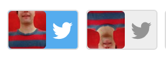

I Got Over A Hundo Twitter Accounts Tho...
100 twitter bots by Cole Willsea in under {{PERIOD_OF_TIME}}

don't try to click below this line it won't work that's the line drawn in the sand! ohhhhhh!
GLOSSARY
- bot: an automaton that does the bidding of it's creator. note that the creator is still responsible for the actions of their automata.
- cyborg: a bot that is not fully independent, or has some human element in it's algorithm. Uber, for example.
- _ebooks: popularized by the traitor horse_ebooks, a bot that spews markov chained junk from a text corpus
- everyWord: everyWord was a bot by Allison Parrish that has inspired numerous clones and remixes and also a book deal *nice* these bots usually churn through a dictionary and tweet out things like `{ADJECTIVE} {WORD}` at a speedy interval
- wowwwnetwork: reply bots like @godtributes by Jim Kang that listen for when their followers tweet something and respond with some sort of automatic nonsense. The classic wowwwnetwork was first implemented by Casey Kolderup and initially expanded by Brett O'Connor
- x-to-y: bots that search twitter for a word "X" and then picks a tweet and tweets it but with that "X" replaced with "Y". These have probably been around in various incarnations for a while, but recently seem to have popped off again thanks to @boy2bot by Tobi Hahn
- time bots: bots that use the timeline/feed/notifications to demarcate intervals of time
- event bots: bots that do something special at certain times (like @IndyDaySpeech or @yulelogbot by Colin Mitchell) or maybe only once per user (think @sortingbot or @YearlyAwards by Darius Kazemi)
- please note that this glossary is by no means exhaustive of the types of bots that are out there it is merely a list of types of bots that I have made